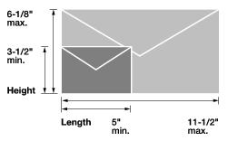

Tri-County Letter/Parcel Presort Service, Inc. (TCLPPS) will process mail for your company or organization by placing a barcode on the bottom, right-hand corner of the mail piece. This automation barcode allows for a discounted postage rate to be applied on you mail. Your savings on postage costs are realized immediately.
First class mail has specific size dimensions and weight breaks by the ounce in determining rates and costs. TCLPPS collects our customer mail and delivers the letters to the USPS the same day.
First class mail is a typical letter a business will generate and send. It will have a specific address recipient. The difference with standard mail is this letter may have infomation that is directly intended to the recipient. Whether this information is confidential or not, the information is specific to the individual receiving the mail. First class mail is delivered regularly within two to three business days (sometimes sooner). First class mail has specific size dimensions and weight breaks by the ounce in determining rates, costs and charges. Additionally, there are certain USPS policies pertaining to mail returns and letter forwarding which can be explained further with a quick phone call or email message to TCLPPS.
Letters:
Note: Not shown is thickness, which is 0.007 inch minimum to 1/4 inch maximum.